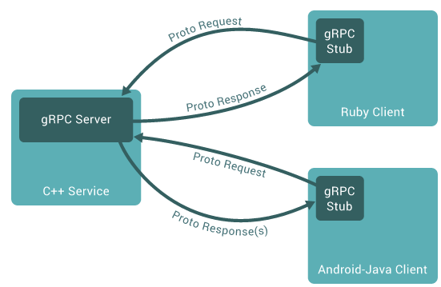

学习gRPC框架原理
简介
A high-performance, open-source universal RPC framework
gRPC框架具有高性能，开源，跨语言的特点，使用了RPC框架，基于HTTP/2设计。
RPC(remote procedure call，远程过程调用)框架提供了一套机制，使得应用程序之间可以进行通信，遵从server/client模型。
RPC将一个服务调用封装在一个本地方法中，让调用者像使用本地方法一样调用服务，对其屏蔽实现细节。具体的实现则通过调用方和服务方的协议，基于TCP连接进行数据交互达成。在本地调用过程中，通常需要通过接口，调用具体实现，最终获取相应的数据。
而在RPC中，本地获取到接口，随后通过网络，调用远程的实现。在使用网络时，需要通过数据序列化来传输数据。
在gRPC中，支持多个语言的应用程序的远程调用，数据交换格式则采用了Protocol Buffer。

如上图所示，左侧为c++语言编写的客户端，其中包含了接口的具体实现。右侧为Ruby和Java客户端，其中对接口进行了调用。客户端获取接口后，将数据通过Protocol Buffer的序列化处理后交给服务端，服务端调用具体实现，并把数据同样以序列化的形式返回给客户端。